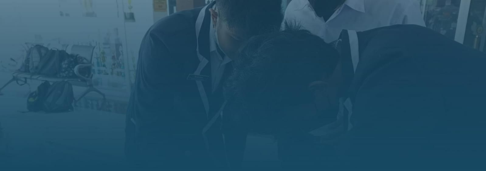

"Empowering Futures, Igniting Minds:

Kekurangan gizi, atau malnutrisi, adalah kondisi serius yang terjadi akibat kekurangan nutrisi dalam jangka waktu yang lama, sering kali dengan tanda-tanda awal yang sulit dikenali. Gejala kekurangan gizi mencakup penurunan berat badan drastis, mudah lelah dan lemas, kesulitan berkonsentrasi, serta luka pada gusi dan mulut. Kondisi ini juga ditandai oleh kulit dan rambut yang kering, penurunan massa otot dan jaringan lemak, wajah cekung, pembengkakan di tubuh, rentan terhadap infeksi, luka yang sulit sembuh, sering merasa kedinginan, perubahan mood, kehilangan selera makan, dan mudah terjatuh. Penyebab kekurangan gizi bisa sangat beragam, mulai dari diet ekstrem atau gangguan makan, hingga penyakit yang mengurangi nafsu makan seperti kanker atau HIV/AIDS. Kondisi yang mengganggu penyerapan nutrisi, seperti penyakit radang usus, gangguan kesehatan mental, konsumsi alkohol berlebihan, efek samping pengobatan tertentu, serta masalah ekonomi dan kurangnya akses terhadap pangan juga bisa menyebabkan malnutrisi. Untuk mencegah kekurangan gizi, sangat penting untuk mengonsumsi makanan bergizi seimbang yang mencakup sayuran, buah-buahan, sumber protein, karbohidrat, lemak sehat, serta produk susu. Pola makan yang sehat dapat membantu menjaga kesehatan tubuh dan mengurangi risiko malnutrisi.
Obesitas adalah kondisi medis serius yang terjadi akibat penumpukan lemak berlebih dalam tubuh. Kondisi ini biasanya terjadi ketika asupan kalori melebihi jumlah yang dibakar, sehingga meningkatkan risiko berbagai masalah kesehatan. Di Indonesia, fenomena obesitas telah menjadi perhatian serius, dengan prevalensi yang terus meningkat. Pada tahun 2018, sebanyak 21,8% orang dewasa di Indonesia mengalami obesitas, angka yang meningkat signifikan dari 15,4% pada tahun 2013. Tren ini menunjukkan bahwa obesitas telah menjadi salah satu masalah kesehatan masyarakat yang mendesak untuk diatasi. Berbagai faktor dapat menyebabkan obesitas, termasuk faktor genetik, kurangnya aktivitas fisik, pola makan yang tidak sehat, efek samping obat, begadang, stres, serta konsumsi alkohol yang berlebihan. Tanda-tanda obesitas biasanya diukur menggunakan Indeks Massa Tubuh (IMT), di mana seseorang dianggap obesitas jika memiliki IMT lebih dari 25 kg/m². Untuk menangani obesitas, diperlukan perubahan pola makan yang lebih sehat, peningkatan aktivitas fisik, dan jika diperlukan, intervensi medis. Pencegahan obesitas juga sangat penting dan dapat dilakukan dengan menjaga pola makan yang seimbang, rutin berolahraga, menjalani diet yang sehat, serta memastikan waktu tidur yang cukup setiap malamny


Kesehatan mental adalah kondisi pikiran dan jiwa yang tenang, memungkinkan seseorang berpikir jernih dan fokus, dan sama pentingnya dengan kesehatan fisik. Gangguan kesehatan mental dapat dipicu oleh berbagai faktor, termasuk genetik atau riwayat keluarga, lingkungan atau sosial yang buruk, pengalaman trauma, diskriminasi atau stigma sosial, isolasi sosial atau kesepian, stres berkepanjangan, peristiwa traumatis, masalah ekonomi seperti kehilangan pekerjaan atau utang, serta penyalahgunaan zat seperti alkohol atau narkoba. Gejala gangguan mental meliputi kesulitan berkonsentrasi, masalah tidur, perubahan suasana hati, kecemasan, serta penurunan produktivitas. Pengobatan gangguan kesehatan mental mencakup berbagai metode, mulai dari obat-obatan, psikoterapi, Supporting group, stimulasi otak, rehabilitasi, perawatan rumah sakit, hingga perawatan mandiri. Untuk menjaga kesehatan mental, penting untuk berpikir positif melalui afirmasi diri, mengelola stres dengan teknik relaksasi, berolahraga secara rutin, menjaga hubungan sosial yang sehat, mendapatkan istirahat yang cukup, membantu orang lain, dan mencari bantuan profesional jika diperlukan. Keseimbangan antara kesehatan mental dan fisik sangat penting untuk mencapai kehidupan yang bahagia dan produktif.
GSS (Gerakan Sekolah Sehat) adalah program yang bertujuan menciptakan lingkungan sekolah yang mendukung kesehatan fisik dan mental siswa melalui lima pilar utama. Pilar pertama, Sehat Bergizi, memastikan siswa memiliki pola makan sehat dan bergizi seimbang. Pilar kedua, Sehat Fisik, berfokus pada peningkatan kesehatan fisik siswa melalui olahraga dan aktivitas fisik rutin. Pilar ketiga, Sehat Imunisasi, memastikan setiap siswa mendapatkan imunisasi lengkap untuk mencegah penyakit. Pilar keempat, Sehat Jiwa, mendukung kesehatan mental dan emosional siswa melalui berbagai kegiatan yang meningkatkan kesejahteraan psikologis. Pilar terakhir, Sehat Lingkungan, menciptakan lingkungan sekolah yang bersih, aman, dan mendukung tumbuh kembang siswa. Melalui kelima pilar ini, GSS bertujuan untuk meningkatkan kualitas hidup dan pembelajaran siswa secara menyeluruh.
Ayo tonton video di samping kita jaga kesehatan tubuh dengan melakukan Gerakan Senam Sehat, Luangkan sedikit waktu setiap hari untuk bergerak dan berolahraga, agar tubuh tetap bugar, energi meningkat, dan semangat belajar terus terjaga. Bersama-sama kita wujudkan tubuh yang sehat dan kuat!